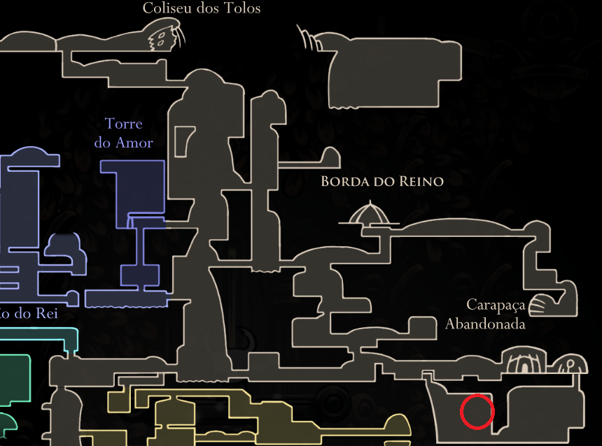

Nascidos de ferrões imperfeitos e descartados que se fundiram. Os ferrões ainda desejam ser empunhados. Permite que o portador corte muito mais rapidamente com seu ferrão.

Corte Rápido
Pode ser Encontra na borda do reino, em sua parte inferior
